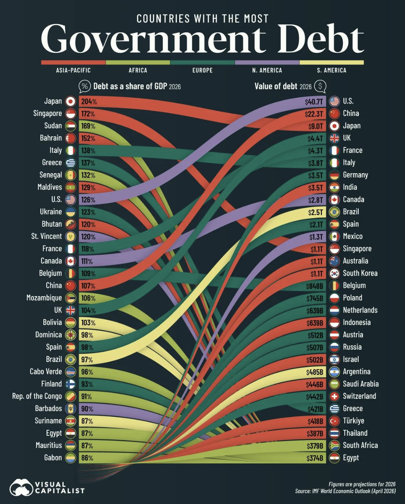

A before and after study of a real infographic that compares government debt across countries, rebuilt with Vega-Lite.

Original: "Countries with the Most Government Debt" by Visual Capitalist, shared on r/Infographics.
Figure 1. Original chart: Countries with the Most Government Debt (Visual Capitalist). A Sankey chart links two separate rankings, debt as a share of GDP and debt in dollars, but nothing flows between them. Each side shows only its own top 30, so 34 countries have ribbons that fade out, and about 30 crossing ribbons make it hard to follow any one country.
Hover over any point to see the exact values for that country.
Figure 2. Redesign: government debt in dollars against debt as a share of GDP for 47 countries. A scatter plot shows both measures for every country at once, using the same IMF data. Only 13 countries appear in both of the original rankings. Sudan, Bahrain and the Maldives are heavily indebted but small in dollars, while Germany and India owe a lot but less than their whole economy. Hover over a point to see exact values.
Design DecisionsI chose a scatter plot because each country has two numbers, and it shows both at once with no ribbons to trace. I used a log scale for the dollar axis because debts range from about $1 billion to over $40 trillion. I rejected a slope chart because it has the same problems as the Sankey chart, two bar charts because they cannot show the relationship between the measures, and a map because small countries like Singapore and Bahrain would disappear.
Data: IMF World Economic Outlook, April 2026 (IMF data portal). Debt in dollars is debt as a share of GDP multiplied by nominal GDP. Download the dataset | View the Vega-Lite specification